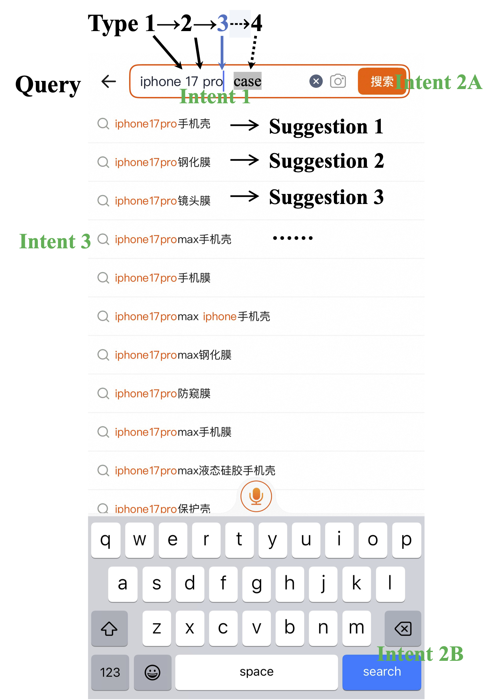
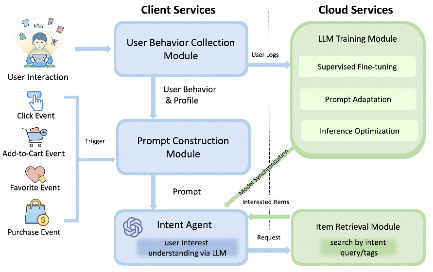
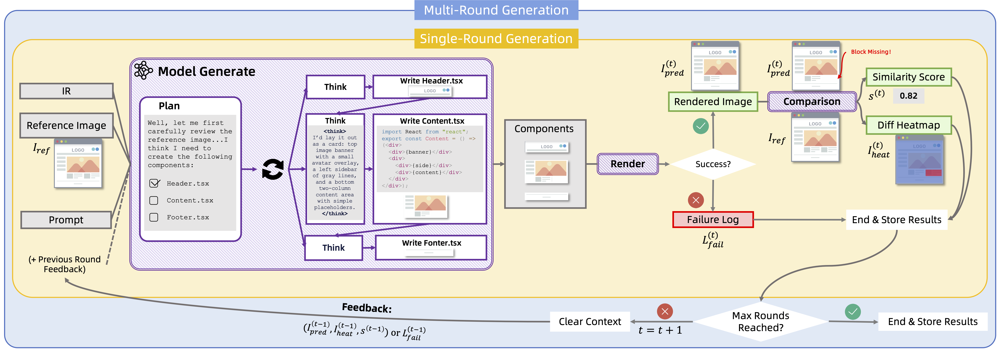
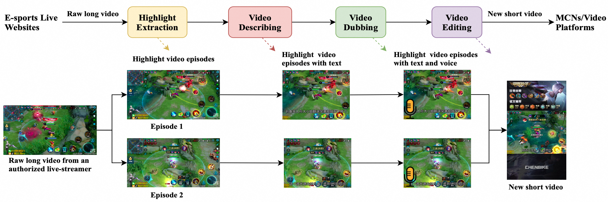
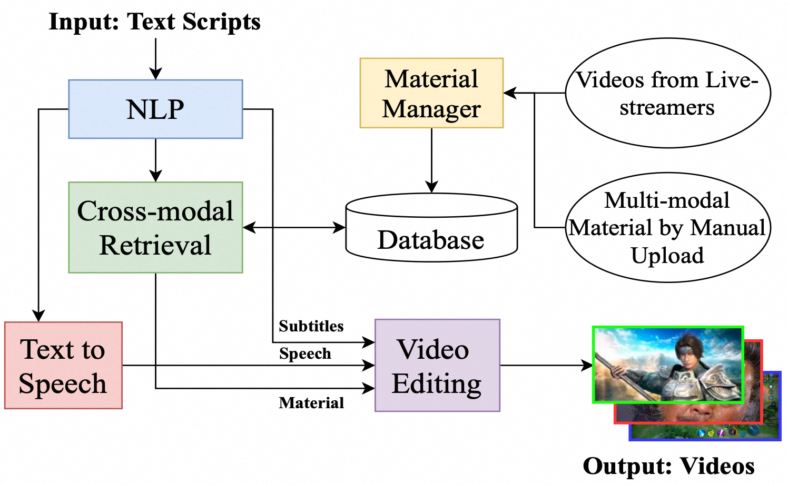
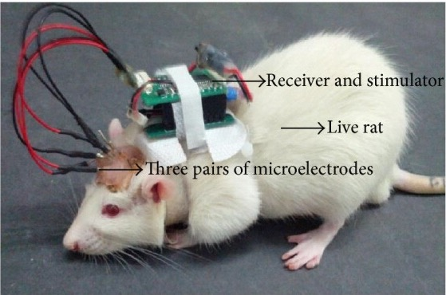

Yipeng Yu (俞一鹏)
Feel free to call me ian. I'm currently an AI researcher in Taobao & Tmall Group at Alibaba. My current research focuses on GenAI and Agentic AI.
I obtained my Ph.D. degree in Computer Science from Zhejiang University under the supervision of Prof. Gang Pan and Prof. Zhaohui Wu, where I investigated Cyborg Intelligence (混合智能) using bidirectional Brain-Computer Interfaces. During this period, I also visited the National University of Singapore as a visiting scholar under Prof. Kay Chen TAN, where I conducted research on Evolutionary Computation with Deep Neural Networks.
yypzju ατ 163 Doτ com
Career
| Current | Manager & Senior Staff Algorithm Engineer | E-commerce, Taobao & Tmall Group, Alibaba | Hangzhou, China |
| Previous | Tech Leader & Senior Researcher | Games, Interactive Entertainment Group, Tencent | Shanghai, China |
| Earlier | Research Scientist | Dialog & IoT, China Research Lab, IBM | Beijing, China |
Paper

This paper provides a deep research of deep research. We position LLMs and Stable Diffusion as the twin pillars of generative AI, and lay out a roadmap evolving from the Transformer to agents. We examine the progress of AI4S across various disciplines. We identify the predominant paradigms of human-AI interaction and prevailing system architectures, and discuss the major challenges and fundamental research issues that remain. AI supports scientific innovation, and science also can contribute to AI growth (Science for AI, S4AI).

Is the user’s current query input exactly what they intend to search for?" Our work aims to answer this question by determining, at each typing, whether the current query is complete. If so, a search is implicitly triggered in advance without waiting for user confirmation. This approach reduces response time and enhances the user search experience. Specifically, we propose TaoType, a client-side framework that introduces innovation in data sampling, feature selection, model design and training, and online strategy. Experiments in a leading mobile shopping application named Taobao validate its effectiveness, achieving offline precision/recall/accuracy of 0.7936/0.8196/0.7742, respectively, and decreasing online response time by 640.51±93.65 milliseconds, which is of great benefit to the search system.

In this paper, we propose RecGPT-Mobile, a framework that designs a lightweight LLM-based intent understanding agent to improve recommendation quality in mobile e-commerce scenarios. By deploying LLM directly on mobile devices, our approach can capture the evolving interests of users more quickly and adjust the recommendation results in real time. Extensive offline analyzes and online experiments demonstrate that our method significantly improves the accuracy of recommendation results, laying a practical path for LLM deployment in production-scale recommendation systems on mobile devices, as well as a scalable solution for integrating LLMs into real-world next-query prediction systems.

We introduce 1D-Bench, a benchmark grounded in real e-commerce workflows, where each instance provides a reference rendering and an exported intermediate representation that may contain extraction errors. 1D is short for one day, representing the efficient completion of design-to-code tasks in less than one day. Models take both as input, using the intermediate representation as structural cues while being evaluated against the reference rendering, which tests robustness to intermediate representation defects rather than literal adherence. 1D-Bench requires generating an executable React codebase under a fixed toolchain with an explicit component hierarchy, and defines a multi-round setting in which models iteratively apply component-level edits using execution feedback. Experiments on commercial and open-weight multimodal models show that iterative editing generally improves final performance by increasing rendering success and often improving visual similarity. We further conduct a pilot study on post-training with synthetic repair trajectories and reinforcement learning based editing, and observe limited and unstable gains that may stem from sparse terminal rewards and high-variance file-level updates.

In this work, we extend KGED to a four-class classification task to identify which element is incorrect or whether the triple is correct. Directly adapting existing LLM-based methods to this setting yields limited performance, as they fail to effectively exploit the topological information of KGs. To address this issue, we propose a novel topology-injected LLM framework, which precomputes high-order common neighbors between head and tail entities as topological evidence, thereby reducing complexity. Furthermore, we introduce a mixture-of-experts adapter that maps structural and topological evidence into the text embedding space.

We propose SEAL, a novel contrastive learning framework. It leverages structure-aware learning to preserve semantic hierarchies and masked element alignment for fine-grained semantic discrimination. Furthermore, we release StructDocRetrieval, a long structured document retrieval dataset with rich structural annotations. Extensive experiments on both the released and industrial datasets across various modern PLMs, and online A/B testing demonstrate consistent improvements, boosting NDCG@10 from 73.96% to 77.84% on BGE-M3.

This study aims to address this gap by incorporating users' emotional and behavioral indicators into the prediction of short-video viewing behavior. Study 1 was conducted in a controlled laboratory setting, where participants viewed videos on a computer screen while their physiological activity was recorded as an objective measure of emotional responses. Study 2 aimed to enhance ecological validity by having participants view videos on mobile phones, enabling them to swipe between videos as they would in a typical short-video app. Our findings provide valuable insights into the psychological drivers of short video viewing behavior and present a novel, non-intrusive approach to incorporate users’ real-time experiences into recommendation systems.

In this work we investigate the relevance of different positions of the latent image features to the target object in diffusion model, and accordingly propose a weighted-merge method to merge multiple reference image features into the corresponding objects. Next, we integrate this weighted-merge method into existing pre-trained models and continue to train the model on a multi-object dataset constructed from the open-sourced SA-1B dataset.

To free human from laborious video production, this paper proposes the building of VideoMaster, a multimodal system equipped with four capabilities: highlight extraction, video describing, video dubbing and video editing. It extracts interesting episodes from long game videos, generates subtitles for each episode, reads the subtitles through synthesized speech, and finally re-creates a better short video through video editing. To the best of our knowledge, VideoMaster is the first multimedia system that can automatically produce product-level micro-videos without heavy human annotation.

We present Text2Video, a novel system to automatically produce videos using only text-editing for novice users. Given an input text script, the director-like system can generate game-related engaging videos which illustrate the given narrative, provide diverse multi-modal content, and follow video editing guidelines. The system involves five modules.

In this paper, we build rat cyborgs to demonstrate how they can expedite the maze escape task with integration of machine intelligence. We compare the performance of maze solving by computer, by individual rats, and by computer-aided rats (i.e. rat cyborgs). They were asked to find their way from a constant entrance to a constant exit in fourteen diverse mazes. Performance of maze solving was measured by steps, coverage rates, and time spent. The experimental results with six rats and their intelligence-augmented rat cyborgs show that rat cyborgs have the best performance in escaping from mazes. These results provide a proof-of-principle demonstration for cyborg intelligence. In addition, our novel cyborg intelligent system (rat cyborg) has great potential in various applications, such as search and rescue in complex terrains.
- ACL 2026 | TaoType: Predicting Fine-Grained Typing Intent for Faster Search |
- SIGIR 2026 | RecGPT-Mobile: On-Device Large Language Models for User Intent Understanding in Taobao Feed Recommendation |
- ICME 2026 | ShapePruning: Shape-Aware ESD-Based Pruning via the Marchenko–Pastur Law |
- WWW 2026, Short | SIT-KGED: Simply Inject Topology into LLM for Knowledge Graph Error Detection |
- arXiv:2603.28361 | Deep Research of Deep Research: From Transformer to Agent, From AI to AI for Science Authors |
- arXiv:2602.18548 | 1D-Bench: A Benchmark for Iterative UI Code Generation with Visual Feedback in Real-World |
- arXiv:2511.23188 | Can Intelligent User Interfaces Engage in Philosophical Discussions? A Longitudinal Study of Philosophers' Evolving Perceptions |
- International Journal of Human-Computer Studies [J] | Beyond Content: Multimodal Emotional Responses Predict Online Moral Contagion Across Laboratory and Real-world Contexts |
- EMNLP 2025 | SEAL: Structure and Element Aware Learning Improves Long Structured Document Retrieval |
- CIKM 2025 | MHSNet:An MoE-based Hierarchical Semantic Representation Network for Accurate Duplicate Resume Detection with Large Language Model |
- arXiv:2510.11584 | LLMAtKGE: Large Language Models as Explainable Attackers against Knowledge Graph Embeddings |
- Computers in Human Behavior Reports [J] | Beyond Algorithms: Utilizing Multi-modal Emotional and Behavioral Cues as Novel Predictors of Short-Video Consumption |
- AAAI 2025 | Resolving Multi-Condition Confusion for Finetuning-Free Personalized Image Generation |
- IJCAI 2023, Demo | VideoMaster: A Multimodal Micro Game Video Recreator |
- Knowledge-Based Systems [J] | Learning high-order structural and attribute information by knowledge graph attention networks for enhancing knowledge graph embedding |
- ICME 2022 | Relational Graph Reasoning Transformer for Image Captioning |
- ACM MM 2021, Demos & Videos | Text2Video: Automatic Video Generation Based on Text Scripts |
- SIGIR 2021 | Deep Music Retrieval for Fine-Grained Videos by Exploiting Cross-Modal-Encoded Voice-Overs |
- ICTAI 2021 | Hierarchical Multilabel Text Classification via Multitask Learning |
- COLING 2020 | When and Who? Conversation Transition Based on Bot-Agent Symbiosis Learning Network |
- AAAI 2019, Demo | A general planning-based framework for goal-driven conversation assistant |
- IEEE Internet of Things Journal [J] | A crowdsource-based sensing system for monitoring fine-grained air quality in urban environments |
- ICCC 2017 | Knowledge Learning for Cognitive Business Conversations |
- PLOS One [J] | Intelligence-augmented rat cyborgs in maze solving |
- Doctoral Dissertation | 脑机融合的混合智能系统: 原型及行为学验证研究 (Cyborg Intelligent Systems Based on Brain-machine Integration: Research on Prototypes and Behavioral Verification) |
- Computational intelligence and neuroscience [J] | Automatic training of rat cyborgs for navigation |
- 生命科学 [J] | 脑机融合系统综述 (Brain-machine integrated systems) |
- PERCOM 2014 | Mind-controlled ratbot: a brain-to-brain system |
- International Workshop on Intelligence Science, in Conjunction with IJCAI-2013 | Automatic training of ratbot for navigation |
- Ubicomp 2012 | FlyingBuddy2: a brain-controlled assistant for the handicapped |
Intellectual Property
🇺🇸 US Patents
- US12070686B2 | Barrage generation method and apparatus and computer-readable storage medium |
- US11500973B2 | Electroencephalography (EEG) based authentication |
- US11238111B2 | Response generation |
- US11222283B2 | Hierarchical conversational policy learning for sales strategy planning |
- US11195620B2 | Progress evaluation of a diagnosis process |
- US10953877B2 | Road condition prediction |
- US10692486B2 | Forest inference engine on conversation platform |
- US10635521B2 | Conversational problem determination based on bipartite graph |
- US10482227B2 | Electroencephalography (EEG) based authentication |
- US10185753B1 | Mining procedure dialogs from source content |
- US10171662B1 | Intervention in conversation between virtual agent and user |
🇨🇳 Chinese Patents
- CN112163560B | 一种视频信息处理方法、装置、电子设备及存储介质 |
- CN110347858B | 一种图片的生成方法和相关装置 |
- CN111104511B | 一种提取热点话题的方法、装置及存储介质 |
- CN111311554B | 图文内容的内容质量确定方法、装置、设备及存储介质 |
- CN112015949B | 视频生成方法和装置、存储介质及电子设备 |
- CN110489663B | 一种社交内容控制方法、装置及计算机设备 |
- CN113518256B | 视频处理方法、装置、电子设备及计算机可读存储介质 |
- CN110457699B | 一种停用词挖掘方法、装置、电子设备及存储介质 |
- CN110458232B | 一种确定图像风格相似度的方法及设备 |
- CN111291551B | 文本处理方法、装置、电子设备及计算机可读存储介质 |
- CN111368214B | 信息推荐方法、装置、计算机设备和存储介质 |
- CN115512692B | 语音识别方法、装置、设备及存储介质 |
- CN115293132B | 虚拟场景的对话处理方法、装置、电子设备及存储介质 |
- CN110891201B | 文本生成方法、装置、服务器和存储介质 |
- CN112423093B | 游戏视频生成方法、装置、服务器和存储介质 |
- CN110597395B | 对象交互控制方法和装置、存储介质及电子装置 |
- CN111163359B | 弹幕生成方法、装置和计算机可读存储介质 |
- CN103885445B | 一种脑控动物机器人系统以及动物机器人的脑控方法 |
- CN103390193B | 一种面向导航的大鼠机器人自动训练装置以及大鼠行为识别方法和训练方法 |
- CN103461166B | 一种面向动物机器人控制训练的三臂迷宫装置及训练方法 |
🇨🇳Copyright of Computer Software
- No. 04680719 ｜ 登记号：2019SR1079394 | 腾讯内容创作者平台软件 [简称：PFC] V1.0 |
- No. 05935844 ｜ 登记号：2020SR0682055 | 腾讯Text2Video视频剪辑平台软件 [简称：Text2Video剪辑平台] V1.0 |
- No. 06709982 ｜ 登记号：2020SR1580703 | 腾讯视频智能创编平台软件 [简称：AutoVideoMaker] V1.0 |
Statistics
👥 Visitors: -- | 👁️ Page Views: --